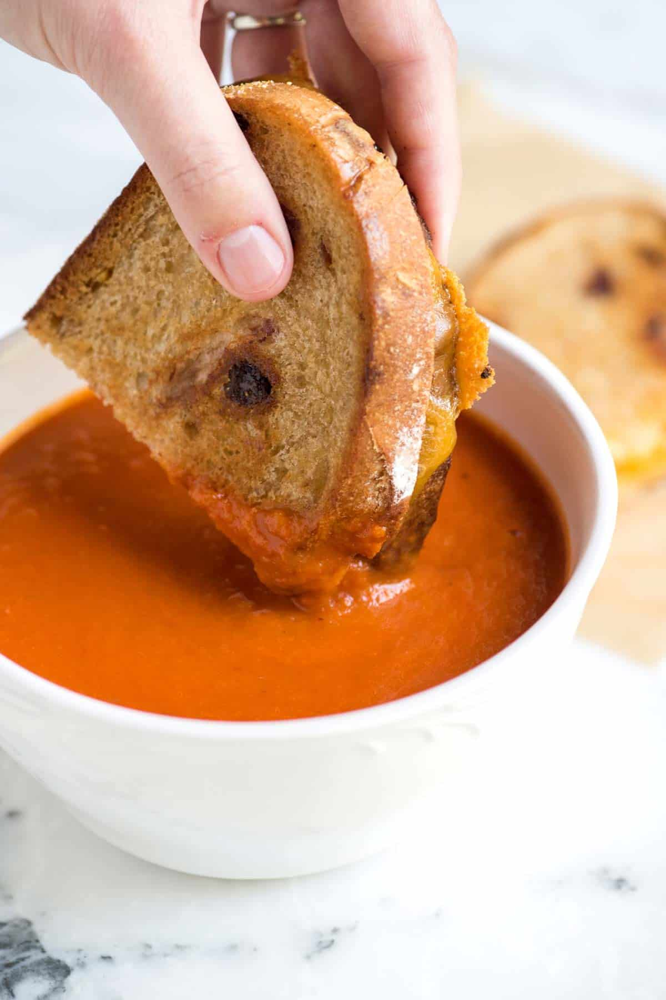

The number one guide in making the best food!
Today's main recipe is... tomato soup!
This simple homemade tomato soup is quick, easy, and insanely delicious. It's excellent with canned tomatoes,
but you can also use fresh tomatoes and perfect to pair with cold winter nights!

Ingredients needed:
- 4 tablespoons unsalted butter
- 1 (28-ounce) can tomatoes, we prefer to use whole peeled or crushed, see notes for fresh tomatoes
- 1/2 large onion, cut into large wedges
- 1/2 cups water, low sodium vegetable stock, or chicken stock
- 1/2 tsp. fine sea salt, or more to taste
Method:
- Melt butter over medium heat in a Dutch oven or large saucepan.
- Add onion wedges, water, can of tomatoes with their juices, and 1/2 teaspoon of salt. Bring to a simmer.
Cook, uncovered, for about 40 minutes. Stir occasionally and add additional salt as needed.
- Blend the soup, and then season to taste. The soup doesn’t need to be ultra-smooth, some texture is a nice
touch.
An immersion blender does make quick work of this, or you can use a blender. If you use a
regular
blender, it is best to blend in batches and
not fill the blender as much as you usually would since the
soup
is so hot. We like to remove the center insert of the lid and cover it with a kitchen towel while
blending
this helps to release some of the steam and prevents the blender lid from popping off (which can be a big,
hot mess).
And that's it! A simple, quick and easy recipe for creamy tomato soup!
Want to see more our recipes? Check out our recipe for perfect lasagne!